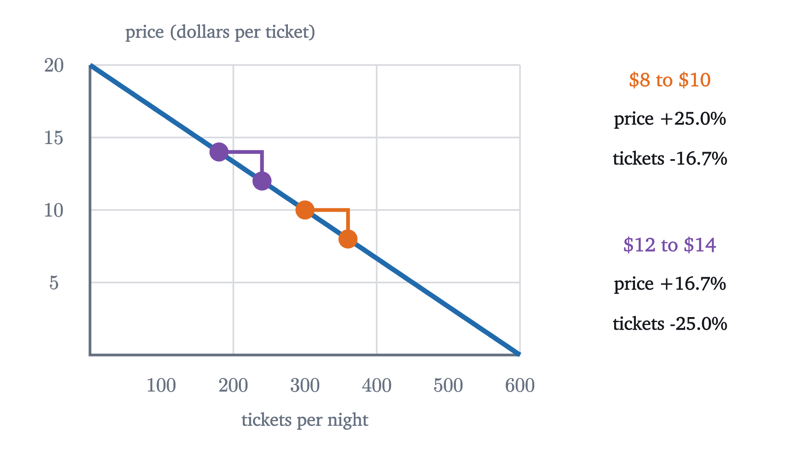
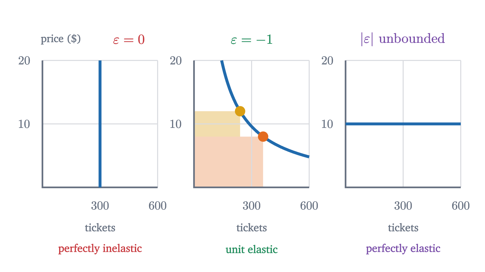
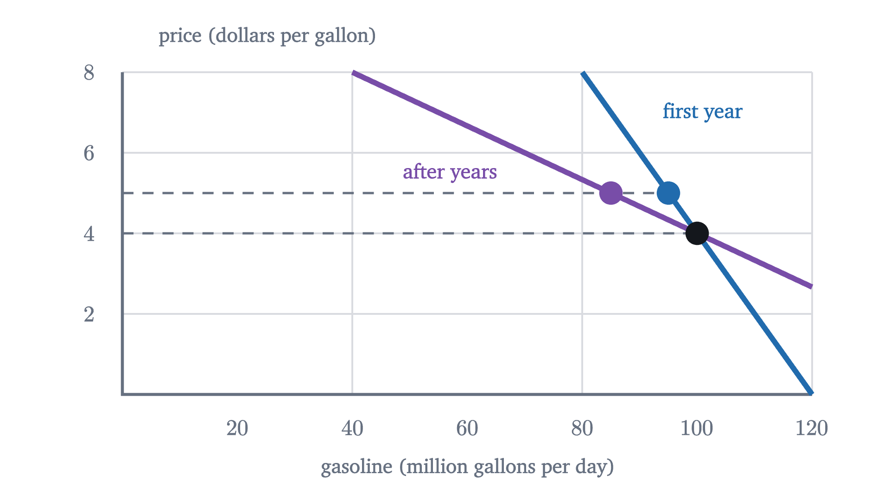
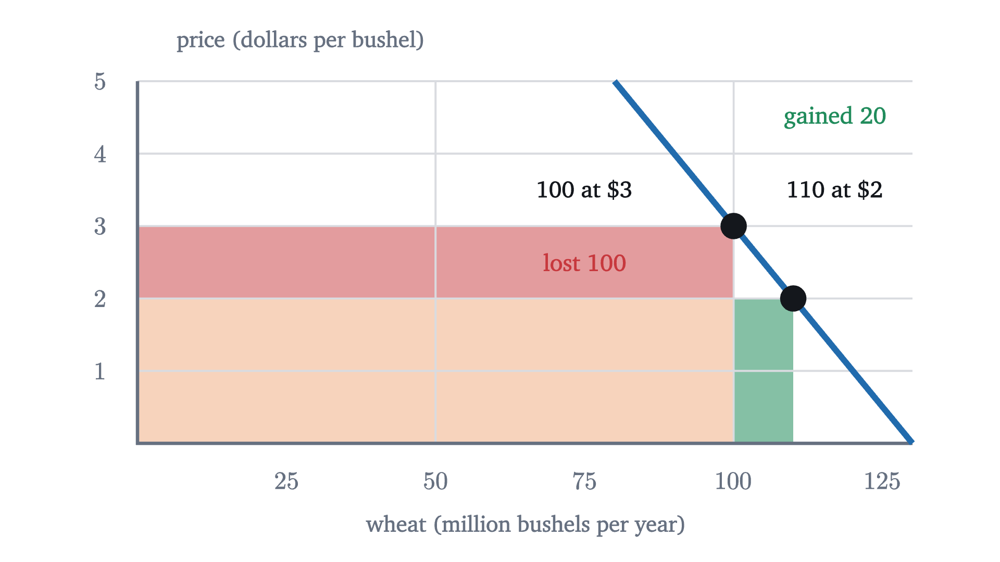

Elasticity: when raising the price lowers revenue
Revenue is a rectangle under the demand curve. Elasticity compares percentage changes in quantity and price, and decides whether a price rise grows it.
AssumesSupply and demand: where a price comes fromWhat slope means, and why y = mx + b is a line
A cinema charges $8 a ticket. It raises the price to $10 and its nightly takings go up. A year later it raises the price again, from $12 to $14, and its takings go down. The hall, the films and the town are the same, and both increases were $2. Why did the second one backfire?
To have numbers to work with, suppose the number of tickets the town buys per night at a price of $P$ dollars is
One way such a formula arises, following the lesson on supply and demand: 600 residents each have a highest price they would pay for a ticket, those prices are spread evenly between $0 and $20, and so each extra dollar loses 30 customers. This is the cinema’s demand curve. It holds everything except the ticket price fixed, including incomes, the films on offer and the price of streaming at home.
| Price $P$ (dollars) | 4 | 6 | 8 | 10 | 12 | 14 | 16 |
|---|---|---|---|---|---|---|---|
| Tickets $Q$ | 480 | 420 | 360 | 300 | 240 | 180 | 120 |
| Revenue $P \times Q$ (dollars) | 1920 | 2520 | 2880 | 3000 | 2880 | 2520 | 1920 |
The table reproduces the story. From $8 to $10 revenue rises from $2880 to $3000, and from $12 to $14 it falls from $2880 to $2520.
Revenue is a rectangle
On the demand graph, a price $P$ and the quantity $Q$ sold at it are the height and the width of a rectangle with one corner at the origin and the opposite corner on the curve. Revenue is its area. A price rise makes the rectangle taller and narrower, and the area changes by the difference of two strips.
Pause and try
Before stepping to the last slide, compute both strips for the rise from $12 to $14 yourself. How many tickets are still sold, and what does each bring in extra? How many are lost, and what did each bring in before?
Show answerHide answer
At $14 the cinema sells 180 tickets, each bringing $2 more than before: the gain is $2 \times 180 = 360$ dollars. It loses $240 - 180 = 60$ tickets that used to bring $12 each: the loss is $12 \times 60 = 720$ dollars. The net change is $360 - 720 = -360$, matching $2520 - 2880$.
So the question “does a higher price raise revenue?” is a contest between two strips. The gain is the price change times the quantity that remains. The loss is the quantity change times the old price.
Slope does not settle the contest
The natural first idea is that the outcome depends on how steep the demand curve is, meaning how many customers each extra dollar drives away. That idea fails on the spot, because the cinema’s demand is a straight line. Its slope is the same everywhere: 30 tickets lost per dollar, at $8 and at $12 alike.
Slope has a second defect. Its value depends on the units. Quote the price in cents and the same demand curve reads $Q = 600 - 0.3c$, with a slope of $0.3$ tickets per cent. Whether a price rise pays cannot depend on the currency unit, so the deciding quantity must be one that ignores units. Percentages do.
| Price change | Change in price | Change in tickets |
|---|---|---|
| $8 to $10 | $+2$ on 8, or $+25\%$ | $-60$ on 360, or $-16.7\%$ |
| $12 to $14 | $+2$ on 12, or $+16.7\%$ | $-60$ on 240, or $-25\%$ |

Revenue is a product, and a product responds to proportional changes in its factors. At $8 the price rose by a quarter while the audience shrank by a sixth, and the product grew. At $12 the proportions were the other way round. The quantity we need is the ratio of the two percentages.
Elasticity
Before defining that ratio, one flaw in ordinary percentages has to be repaired. Going from $8 to $10 is a rise of 25 percent, but going back from $10 to $8 is a fall of 20 percent, because the base changed. A measure of how responsive buyers are between two points on the curve should not depend on which point we call the start. The standard repair is to measure each change against the average of its two values.
The numerator is the proportional change in quantity and the denominator is the proportional change in price. Units cancel in each, so $\varepsilon$ is a pure number. On a downward-sloping demand curve the two changes have opposite signs, so $\varepsilon$ is negative; many books quote only its size, $|\varepsilon|$. For the cinema:
Pause and try
Compute the midpoint elasticity for a price rise from $9 to $11 at the cinema, and the revenue at each of the two prices. What do you notice?
Show answerHide answer
The quantities are $600 - 270 = 330$ and $600 - 330 = 270$, so $\bar Q = 300$ and $\bar P = 10$. Then $\varepsilon = \dfrac{-60/300}{2/10} = \dfrac{-0.2}{0.2} = -1$. The revenues are $9 \times 330 = 2970$ and $11 \times 270 = 2970$: no change at all, at an elasticity of exactly $-1$.
Demand was inelastic where the price rise paid, elastic where it backfired, and unit elastic where it made no difference. That is a theorem, and the midpoint averages are what make it exact.
The middle line of the proof is the two strips again, each measured at an average: $(P_2 - P_1)\bar Q$ is the gain from the higher price and $(Q_2 - Q_1)\bar P$ is the (negative) loss from the lost sales. As a check, $2 \times 330 \times (1 - \frac{9}{11}) = 120$ and $2 \times 210 \times (1 - \frac{13}{7}) = -360$, the two revenue changes in the table.
The theorem assumed nothing about the shape of the demand curve. It holds for any two points with positive prices and quantities.
Elasticity at a single price
The midpoint formula needs two points. Often we want the elasticity at a price, for small changes around it. Take the cinema’s prices $P$ and $P + h$. The quantity changes by $-30h$, the average price is $P + \frac{h}{2}$, and the average quantity is $600 - 30P - 15h$, so
That is $-30$ times price over quantity, evaluated at the midpoint. As $h$ shrinks toward 0 it approaches $-30P/Q$.
For the cinema, $\varepsilon(P) = -30P/(600 - 30P) = -P/(20 - P)$.
Pause and try
Compute the cinema’s point elasticity at $5, $10 and $15. The slope is the same at all three. What is changing?
Show answerHide answer
$\varepsilon(5) = -5/15 \approx -0.33$, $\varepsilon(10) = -10/10 = -1$, and $\varepsilon(15) = -15/5 = -3$. The slope factor, $-30$, is fixed, but it is multiplied by $P/Q$. Moving up the line, $P$ grows and $Q$ shrinks, so a dollar becomes a smaller fraction of the price while 30 tickets become a larger fraction of the audience.
This is why slope and elasticity must be kept apart. One straight line, with one slope, has every elasticity from nearly 0 at the bottom to arbitrarily large at the top.
For a straight line we can now say exactly where revenue peaks.
For the cinema, $a = 600$ and $b = 30$: the peak is at $P = 10$ with $R = 360000/120 = 3000$, as in the table. Readers who know calculus can reach the same place for any demand curve: $R'(P) = Q + PQ'(P) = Q\,(1 + \varepsilon)$, which is zero where $\varepsilon = -1$, and a maximum requires a zero slope. One caution about what this result means. Maximum revenue is not maximum profit, since tickets also cost something to provide; the next lesson deals with that.
Three special demand curves
A straight line passes through every elasticity. Three curves have the same elasticity everywhere, and they mark the limits of the definition.

A vertical demand curve has $Q_2 = Q_1$ for every price change, so $\varepsilon = 0$: demand is perfectly inelastic, and a price rise raises revenue in full proportion. On the curve $Q = 2880/P$ revenue is $P \times Q = 2880$ at every price, so by the revenue test $1 + \varepsilon = 0$ between any two of its points: it is unit elastic everywhere. A horizontal demand curve has no elasticity under our definition, because the definition requires $P_1 \ne P_2$. It is the limiting case of flatter and flatter curves, on which $|\varepsilon|$ grows without bound, and it is called perfectly elastic. A wheat farmer who is one of thousands faces demand of this kind: at the market price she can sell all she has, and a cent above it, nothing.
What makes demand elastic
Elasticity is a property of buyers, and it has to be measured. The model does not tell us whether the demand for gasoline is elastic. Statistical studies do, and they find regular patterns. Demand tends to be more elastic when close substitutes exist (one brand of cereal against cereal in general), when the good takes a large share of the buyer’s budget, and when buyers have more time to adjust.

Surveys of the many studies of gasoline put its elasticity at roughly $-0.1$ to $-0.3$ in the short run (recent U.S. estimates are smaller, nearer $-0.05$) and two or three times that size over many years. Within a month a driver can only skip trips, but over several years she can buy a smaller car or move closer to work. These figures are estimates with wide error bands and they differ between places and periods. Treat any single quoted elasticity as approximate.
Two applications

Check yourself
A museum finds that the elasticity of demand for its tickets is about $-0.6$ around the current price. If the only goal is more ticket revenue, what should it do?
What took the work here was finding the right measure. Slope was the obvious candidate and failed twice, and the measure that survived is the one the revenue rectangle itself picks out: the ratio of proportional changes, with midpoint averages. The same ratio can be formed for supply, and in the lesson on taxes the two responsiveness measures together decide who bears a tax.
Problems
The first three are direct computations, the next three need the theorems or an explanation, and the last two go further.
Problem 1
A café raises the price of a coffee from $4 to $5 and daily sales fall from 220 cups to 180. Compute the midpoint elasticity. Is demand elastic or inelastic over this range? Confirm with the revenues.
Show solutionHide solution
$\bar Q = 200$ and $\bar P = 4.5$. So $\varepsilon = \dfrac{-40/200}{1/4.5} = -0.2 \times 4.5 = -0.9$. Since $|\varepsilon| < 1$, demand is inelastic and the price rise should raise revenue. It does: $4 \times 220 = 880$ dollars before and $5 \times 180 = 900$ after. The revenue test gives the same change: $1 \times 200 \times (1 - 0.9) = 20$.
Problem 2
For the cinema, $Q = 600 - 30P$, find the point elasticity at prices of $4, $12 and $16, and say in each case which way revenue moves if the price is raised slightly.
Show solutionHide solution
$\varepsilon(P) = -P/(20 - P)$. At $4: $-4/16 = -0.25$, inelastic, revenue rises. At $12: $-12/8 = -1.5$, elastic, revenue falls. At $16: $-16/4 = -4$, elastic, revenue falls. This agrees with the table, where revenue climbs up to $10 and declines after it.
Problem 3
Demand for a ferry crossing is $Q = 80 - 4P$ passengers per trip, with $P$ in dollars. Find the price that maximizes revenue, the revenue there, and the point elasticity at that price.
Show solutionHide solution
Here $a = 80$ and $b = 4$, so the revenue-maximizing price is $\frac{a}{2b} = 10$ dollars. Then $Q = 80 - 40 = 40$ and $R = 400$ dollars, which matches $\frac{a^2}{4b} = \frac{6400}{16} = 400$. The elasticity is $-4 \times 10/40 = -1$, as the theorem requires.
Problem 4
A city bus carries 9000 riders a day at a fare of $2.00. The fare will rise to $2.50, and studies suggest a midpoint elasticity of $-0.4$ over this range. Predict the direction of the change in fare revenue without computing, then estimate the new ridership and revenue.
Show solutionHide solution
Demand is inelastic, so by the revenue test a fare rise increases revenue. For the size: $\bar P = 2.25$, so the proportional price change is $0.5/2.25 = \frac{2}{9}$ and the proportional quantity change is $-0.4 \times \frac29 = -\frac{4}{45}$. Solve $\dfrac{Q_2 - 9000}{(Q_2 + 9000)/2} = -\dfrac{4}{45}$: this gives $45(Q_2 - 9000) = -2(Q_2 + 9000)$, so $47 Q_2 = 387000$ and $Q_2 \approx 8234$ riders. Revenue goes from $2 \times 9000 = 18000$ dollars to $2.5 \times 8234 \approx 20585$ dollars a day.
Problem 5
The cinema’s demand in cents is $Q = 600 - 0.3c$, where $c$ is the price in cents. Find the slope and the point elasticity at a price of 1000 cents, and compare with the values in dollars. What does the comparison show?
Show solutionHide solution
The slope is $-0.3$ tickets per cent, against $-30$ tickets per dollar: a different number for the same curve. The elasticity is $-0.3 \times 1000 / (600 - 300) = -300/300 = -1$, the same as $\varepsilon(10) = -1$ in dollars. Changing the unit of price multiplies $P$ by 100 and divides the slope by 100, and the product $b \times P$ is untouched. Elasticity describes the buyers; slope describes the buyers and the choice of units together.
Problem 6
Rank these from least elastic demand to most elastic and justify the order: (a) gasoline, over the next month; (b) gasoline, over the next ten years; (c) gasoline from one particular station on a street with four stations.
Show solutionHide solution
Least to most elastic: (a), (b), (c). Over a month, drivers have almost no way to use less fuel, so quantity barely responds. Over ten years they can change cars, homes and jobs, so the same price rise removes more demand. One station among four faces a nearly perfect substitute a few meters away: a small price rise sends most of its customers next door, so its own demand is highly elastic even though the market’s is not. The good is the same in all three; what differs is how easily buyers can avoid the higher price.
Problem 7
In the wheat example, $Q = 130 - 10P$. (a) Which harvest size would give farmers the largest total revenue, and what is that revenue? (b) Compare it with the normal harvest of 100. (c) Explain why no individual farmer would choose to grow less.
Show solutionHide solution
(a) Revenue as a function of price is $P(130 - 10P)$, which by the theorem peaks at $P = \frac{130}{20} = 6.5$ dollars, where $Q = 65$ million bushels and revenue is $6.5 \times 65 = 422.5$ million dollars. (b) A normal harvest of 100 earns 300 million. Farmers as a group would earn about 41 percent more by growing 35 percent less, because at 100 they are on the inelastic part of the demand curve. (c) Each farmer is a price-taker: her own output does not change the price, so every extra bushel she grows adds the full price to her revenue. The gain from a smaller total crop exists only if all restrict together, and each has a reason to break ranks.
Problem 8
Prove that on the demand curve $Q = k/P$, with $k > 0$, the midpoint elasticity between any two points is exactly $-1$, directly from the definition and without using the revenue test.
Show solutionHide solution
Let the points be $(P_1, k/P_1)$ and $(P_2, k/P_2)$ with $P_1 \ne P_2$. Then
So $\dfrac{Q_2 - Q_1}{\bar Q} = \dfrac{2(Q_2 - Q_1)}{Q_1 + Q_2} = \dfrac{2(P_1 - P_2)}{P_1 + P_2}$, while $\dfrac{P_2 - P_1}{\bar P} = \dfrac{2(P_2 - P_1)}{P_1 + P_2}$. Their ratio is $\dfrac{P_1 - P_2}{P_2 - P_1} = -1$. This agrees with the revenue test: revenue is $k$ at every point, so $R_2 - R_1 = 0$ forces $1 + \varepsilon = 0$.